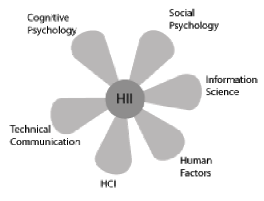
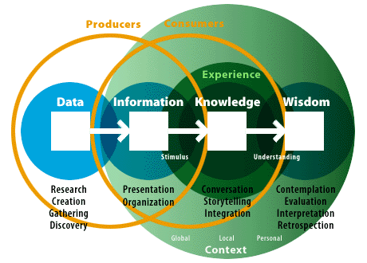
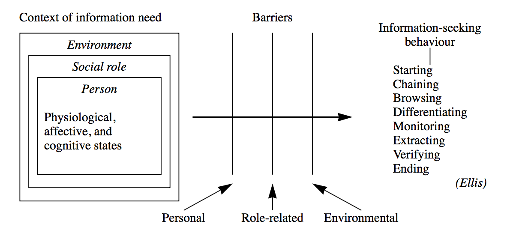
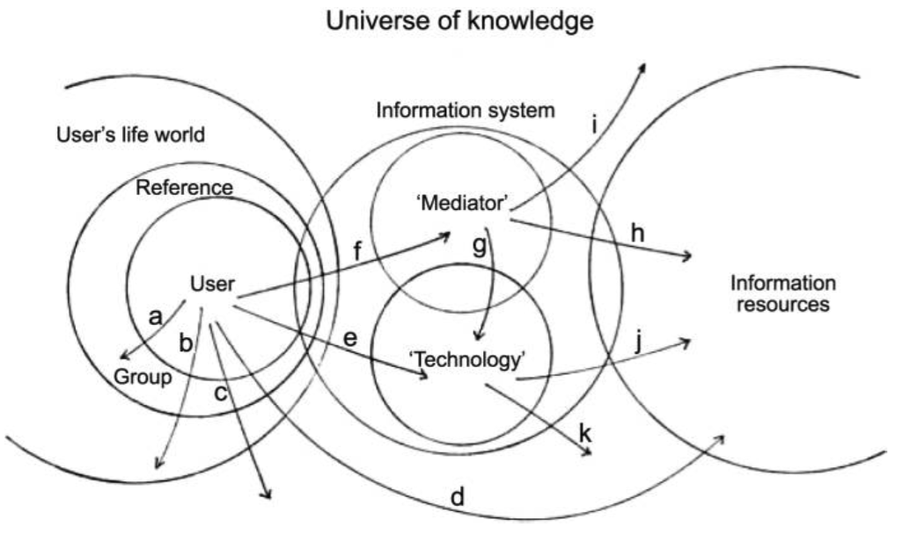
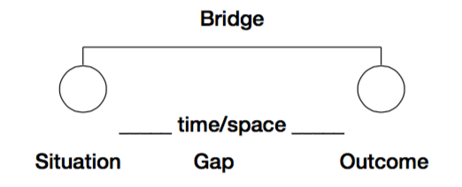
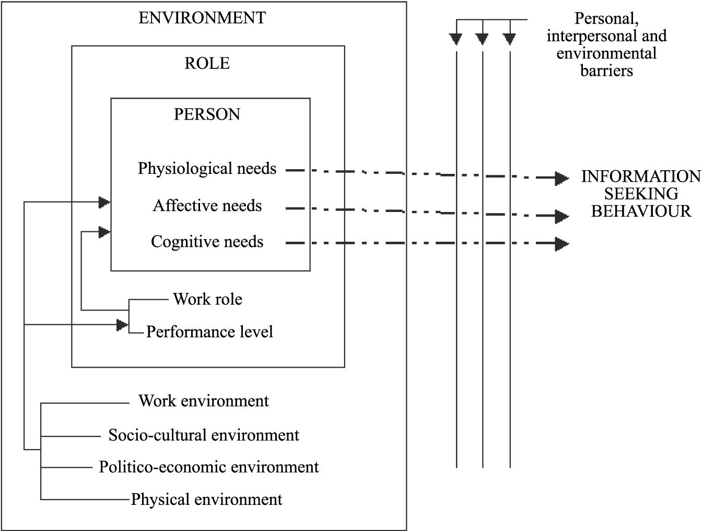
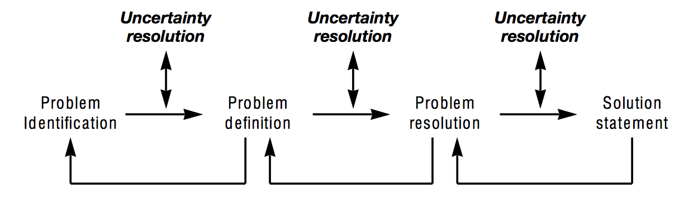

Going beyond HCI: Information design for knowledge-sharing platforms and information-seeking behavior support? in a traveling context
1. INTRODUCTION
“Every day, we create 2.5 quintillion bytes of data — so much that 90% of the data in the world today has been created in the last two years alone.”
- IBM Corporation, 2013
We are drowning in data. We like to talk about information society, but “[m]ost of the technology we call information technology is, in fact, data technology” (Shedroff, 2000, p. 272). The turn of 21st century is characterized by a severe information and data overload, on both an organizational and personal level (Jones, 2012; Shedroff, 2000). The industry leaders are quick to provide us with new buzzwords Big Data, Web 3.0, Semantic Web Deep Learning, and Internet of Things. Such terms may help familiarize the general public with the latest advances in technology, but they are often just new labels for problems that researchers, philosophers, and businesses were trying to address decades ago. These problems have grown in scale. They now also affect more people than ever before. However, the way we approach information and information design has not kept pace with the growing complexity of our information systems.
We may indeed be in the midst of a transition to a true information society. But for the time being, our approach to dealing with information problems is still rooted in the mechanistic, Tayloristic view of optimum organization. Our answer to the ever-increasing flow of unstructured data and information has been overstructuring (Cooley, 2000). System designers and engineers have a tendency to base their decisions on the system’s capabilities rather than human needs which the system is supposed to cater for. This leads to bloated multi-purpose solutions that are out of proportion to what the human mind can process in a reasonable and useful manner. By framing people’s problems as mere features in vast information systems, we fail to address the more fundamental subtle nuances of everyday life issues of how people perceive and interact with the information around them on day-to-day basis. We judge the quality of the system by the number of features it has, rather than how it enhances our lives. The field of human-computer interaction (HCI) has emerged to tackle this growing disconnect between the systems and people using those systems.
HCI gained prominence in the early 90’s and its popularity keeps rising to this day. The researchers in this field did succeed in shifting more attention to human actors, however, the concepts and ideas used are still much technocentric. REWRITE! Much of the research in HCI revolves around system capabilities and investigating how people manipulate data through visual interfaces, rather than how they perceive information and how it fits into the broader context of their everyday lives. It tries to extract and objectify universal truths and apply them to the design of interfaces which are usable, but not necessarily useful.
This paper examines the latest approaches to the design of human-centered information systems. These approaches are rooted in an ecological inquiry, investigating people in their natural surroundings, paying particular attention to the context of the information use. These emerging fields see people as an absolute focal point of the study. The underlying technology is of secondary interest. The utility of these post-modern perspectives on information management is illustrated on a design solution for a knowledge-sharing platform. The notion of design in this paper takes core principles from established fields of industrial design and design science. It then combines them with a more recent research from an emerging field of information design. Principles of information design are applied to conceptualize a possible solution for information problems posed by a specific context of traveling to a foreign country.
Traveling is an information-intense industry, and has been one of the most impacted by the massive proliferation of the Internet and social media in the last decade (Xiang, & Gretzel, 2010). Therefore, it was chosen as a suitable area of interest for this research. Moreover, the choice was motivated by author’s own personal experience with finding and sharing relevant travel information, and a long-term desire to design and develop a platform that would mediate a more authentic traveling experience. To guide the investigation, the following research question has been devised:
How to provide travelers with location-based information through harnessing collective knowledge of local residents?
The paper starts off by positioning itself in the multidisciplinary field of information management. Then it goes into examining the terminology and concepts used in the analysis by applying the latest perspectives for the design of human-centered information systems. After that, the methodology and the research design are presented, followed by the analysis itself. The paper concludes with proposing a possible solution to the information problem at hand, and finishes off by summarizing the findings.
2. RESEARCH DOMAIN
The purpose of this paper is to improve understanding of theoretical background for designing human-centered communication and information systems (IS). More specifically it looks at many-to-many online knowledge-sharing platforms, with a particular focus on information-seeking behavior within those platforms. On a more practical note, it aims to provide a set of guiding principles for designing such platforms in a specific context of travel and location-based information-seeking. The proposed platform design’s function is to harness locally embedded collective knowledge of residents and travelers, and disseminate this knowledge in the form of digitized information artifacts to a wider audience online.
The research is rooted in an inherently multi-disciplinary field of Information Management (IM), drawing on concepts and ideas from various disciplines, such as communication, information systems, information science, knowledge management, information architecture, social science, and design science (Fidel, 2012; Madsen, 2012). It is operating in both an information and knowledge domain without a clear distinction between the two, as they constantly intervene throughout the paper. This ambiguity in the terminology will be further examined in the paper’s conceptual framework section.
From a traditional IM perspective, the following research spans the entirety of the Information Management Cycle, as proposed by Choo (2002), with a particular focus on stages of information needs, acquisition, services, and distribution. The remaining stages are examined only peripherally, but nonetheless play an important role, as they are inherently encompassed in the overall design of an IS. Choo’s view on the management of the entire information value chain is more useful for examining IM from an organizational perspective, where much of the IM activity revolves around underlying technology and infrastructure. This technology-oriented IM views information primary as a resource to be objectified, collected, stored, managed, analyzed, and distributed (Schlögl, 2005). However, since the overarching goal is to design a knowledge-sharing IS, certain aspects of technology-oriented IM are still going to hold relevance in the analysis, particularly within the proposed design solution.
By focusing on information-seeking behavior, this paper takes a more human-centered, content-oriented approach to IM, which is rooted in library and personal perspectives of IM (Detlor, 2010; Schlögl, 2005). While library perspective is concerned with the information needs of people (patrons), the focus is still on storing, organizing, and distributing information. This perspective takes a rather top-down approach, where the library (librarian) serves as a broadcast medium to disseminate information in one-to-many manner with little regard for the immediate context of information use. On the other hand, personal perspective puts an individual human actor at the forefront. Here, IM is less about technical solutions and more about the human-side of IM. After all, it is humans who “add the context, meaning and value to information, and it is humans who benefit and use this information” (Detlor, 2010, p. 107). The field of study of personal information management (PIM) stems from this human-oriented perspective.
Much of the early study of PIM is grounded in the traditional techno-centric branch of IM. In this view, the actor’s interaction with information is seen through a simplistic perspective, where the interaction is often depicted by static input, output models (Jones & Teevan, 2007). The focus is on manipulation of information items and interfaces that mediate the interaction, rather than on the interaction itself and the context it occurs in. The study of PIM is an integral part of the human-computer interaction (HCI) field, but the growing realization that “our interactions with information are much more central to our lives than are out interaction with computers” (Jones & Teevan, 2007, p. 18) has lead to an emergence of a new branch of study called human-information interaction (HII).
This paper positions itself in this up-and-coming field of HII, which establishes the human actor as the study’s prime focal point. The study takes a naturalistic approach to PIM, stressing the importance of various contexts and information spaces in which people interact with information and make sense of the world around them (Fidel, Pejtersen, Cleal, & Bruce, 2004; Naumer & Fisher, 2007). It is a holistic perspective that acknowledges the need to study people’s interaction with information in the natural setting it occurs in. This ecological inquiry needs to be conducted in a cross-disciplinary manner considering “cognitive, physical, neurological, social, emotional, and economic aspects of interaction, among others” (Fidel, 2012, p. 1).
It is not technically feasible to study people across every single context they immerse themselves in on a daily basis. It is still reasonable to conduct research within a specific context(s). However, it is necessary to acknowledge the complex cross-contextual nature of human life and that “personal information and methods for managing it may move between these contextual boundaries” (Naumer & Fisher, 2007, p. 76).
By applying the latest approaches to HII, this paper examines problem-based information needs within a specific information space in a context of travel. This information space is set in a broader activity space where physical action and physical experiences occur. “In order to undertake activities in the activity space, people need access to information” (Benyon, 2001, p. 427). Therefore, principles of information design are applied to conceptualize a possible IS solution that would provide access to locally relevant information artifacts in a temporary information space of travel, while staying compatible with the flux of contexts of everyday human activity. split last sentence!
This paper’s author believes that due to the inherently broad, multi-disciplinary, and ambiguous nature of the conceptual framework, the findings are generalizable to a greater or lesser degree. With minor adjustments, the research design, methods, concepts, and models used throughout this paper can be repurposed for analyzing and designing online knowledge-sharing platforms that focus on contexts other than travel.
3. CONCEPTUAL FRAMEWORK
This section of the paper aims to improve understanding of the theoretical underpinnings of HII and information design—two young, emerging fields that have roots in more traditional fields of library and information science (LIS), PIM, HCI, IS design, and design science. Moreover, it serves as a theoretical framework for the analysis presented later on. First, the basic concepts and terminology are examined, as to clarify their meaning for paper’s purposes and to avoid confusion. Next, a brief history of the changing role of the design is presented. The section concludes with conceptual models that have been chosen as relevant for the analysis.
According to Schrader, who studied 700 definitions of “information science” from 1900 to 1981, “the literature of information science is characterized by conceptual chaos” (as cited in Myburgh, 2005, p. 13). Rapid technological advances, widespread adoption of portable computing devices, and growing ubiquitous access to the Internet have characterized the turn of the 21st century (eMarketer, 2014a, 2014b; Internet Live Stats, n.d.). This has lead to a growing realization of the central role information plays in our everyday lives, and to a further conceptual and semantic confusion surrounding IM’s core terms like data, information, and knowledge (Myburgh, 2005).
To accommodate for the ambiguity in terminology and interpretation of concepts, this paper takes a strong interpretivist view rooted in social construction, looking “for culturally derived and historically situated interpretations of the social life-world” (Crotty, 1998, p. 67). It strives to avoid a pitfall of false dichotomies that separate analytical concepts into neatly confined boxes with limited applicability to real world problems, if taken at face value. In this view, virtually any claim is valid to a greater or lesser degree. While this allows for a substantial freedom in the analysis, it also renders the outcomes of the analysis inconclusive. In other words, this paper claims to provide a “good enough” solution to a research problem at hand, but it does not (and by the definition it cannot) conclude with an all-encompassing answer with a single “correct” solution. The entire paper is based on this modus operandi.
The paper’s pragmatic nature stems from a phenomenological tradition in which the object and the subject are inherently interlinked—one cannot be adequately described without the other (Crotty, 1998). Rather than trying to objectify and isolate some sort of “reality out there,” the focus is on human experience of the world, not the world itself (Fidel, 2012). It studies the differences in the interpretations of the world and what aspects of our everyday life and environment affect these interpretations and how. In this view, the object of study is not information itself, but rather the role information plays in a wider context of work, study, and life in general (Bawden & Robinson, 2012; Wilson, 2006). The paper looks specifically for the role information plays in the context of travel.
The underlying goal of this paper is to go beyond HCI, which has traditionally been concerned with the study of PIM and information needs in IS design. In the world where people are drowning in data, HCI “has not really kept pace with the changes in technology” (Benyon, 2001, p. 426). This system-centric view sees the user as outside the computer and focuses primarily on how people manipulate data through interfaces. It investigates how people consume information, rather than how they comprehend it and integrate it in the broader context(s) of their everyday lives. What we call information systems, are in fact, often just data-manipulation systems. The design of these systems is usually driven by the capabilities of the given technology, rather than by the information needs of the end-user (Albers, 2008; Benyon, 2001; Wilson, 2000).
The growing realization of the inadequacy of HCI to cope with increasingly information-dense nature of everyday life has lead to an emergence of a new field of HII. This field has marked a “a philosophical shift of privileging the human’s interaction with the information, rather than the human’s interaction with the computer interface” (Albers, 2008, p. 117). This naturalistic view sees technology merely as an enabler, not the point of interest. It moves the human actor from outside to inside an information space in which “people must perceive and interpret the information artefacts so that they can achieve their goals in an activity space.” (Benyon, 2001, p. 429). The focus is on “on people interacting with information and solving problems” (Albers, 2008, p. 118) in an activity space, where their everyday experiences occur. HII strives to uncover how people conceive information, rather than just perceive it (Benyon, 2001). At the end of the day, a “person does not want to use a web-based information system or a computer application; they want to accomplish a real-world goal” (Albers, 2008, p. 118). The term human information behavior (HIB) is sometimes used to describe essentially the same concept as HII. In this paper, the term HII is preferred, but both can be used interchangeably (Jones, 2012; Jones & Teevan, 2007). The Figure 1 illustrates the multidisciplinary nature of the field.

3.1 Terminology goulash
As mentioned earlier, there is quite a bit of conceptual confusion and a lack of consensus surrounding many of the terms central to the study of IM, and the various disciplines it encompasses. The word “information” is understood differently if one is an engineer developing a new enterprise intranet, than if one is a communications expert analyzing a political debate on television. One sees it purely as a resource existing independent of the human mind, while the other one sees it as product of human interaction. The following is a rough delineation of some of the key terms used throughout the paper and how they are understood for the purposes of this research.
Data
Data is a raw representation of something factual and quantifiable. It is created through measurement and direct observation. Moreover, it can be received, stored, processed, and transmitted by humans, computers, and other mediums (Myburgh, 2005). Data do not have an intrinsic discrete meaning and are therefore not an adequate product for communication (Myburgh, 2005; Shedroff, 2000). To obtain value from data, it must be transformed, organized, and given meaning. Once a human actor has made sense of data, it becomes information. Data can be subsumed under information in a sense that “data may or may not be information depending upon the state of understanding of the information user” (Wilson, 2000, p. 50).
Information
Information is a product of human interaction with data and that “part of an individual’s knowledge which can be communicated, which has meaning and which can be understood by other individual” (Myburgh, 2005, p. 24). Information has meaning, as opposed to data. The term is often conflated with the terms data and knowledge, as it is typically used to describe different things in different contexts. In the early study of IM, information has been seen as something that can exist independent of the human mind and the medium that is used to carry it. In this system-centric view, the information is objectified and seen mainly as a resource to be managed and manipulated. However, the now more established notion sees information exclusively as a product of a communicative interaction process set in a certain context (Bawden, & Robinson, 2012). When we talk about information as an independent entity residing outside of the human mind, we are talking about an information item or an information artifact. That is the “packaging of information in a persistent form than can be acquired, created, viewed, stored, grouped (with other items), moved, given a name and other properties, copied, distributed, moved, deleted, and otherwise manipulated” (Jones & Teevan, 2007, p. 7). Another term used for an information item is a document, which refers to any recording of information (Myburgh, 2005).
Knowledge
In broad terms, knowledge can be described as “that which people know and is accumulated through understanding, interpreting, analysing and making meaning of what is experienced and observed, as well what others have communicated” (Myburgh, 2005, p. 22). It is derived from both data and information and depends on personality and intellect. Therefore, everyone possesses a highly personal unique body of knowledge that resides inside his or her head. There have been attempts to separate knowledge from the human mind to a certain degree. Management studies in particular have grown fond of the notion of the tacit knowledge, popularized by Nonaka (1991). This view argues that an organization can tap into knowledge hidden in the heads of the organizational members by devising appropriate methods and processes to translate tacit knowledge into explicit knowledge that can be communicated to the rest of the organization. This again suggests a rather system-centric view, where knowledge is treated as a commodity to be captured, codified, and seen primarily as an organizational asset. In the tradition of Polanyi (Tsoukas, 2003), this paper treats knowledge as something highly situated and entirely ineffable. It cannot be transmitted, only information about the knowledge can, and “that information can only ever be an incomplete surrogate for the knowledge” (Wilson, 2000, p. 50). When a person interacts with information and uses it to solve a problem or achieve a specific goal, knowledge can also be seen as information in action (Hughes, 2002). The concept of wisdom is beyond the scope of this paper, and it is simply regarded as a highest form of knowledge that has accumulated over a long period and is impossible to communicate.

Information behavior
Wilson described information behavior as “the totality of human behavior in relation to sources and channels of information, including both active and passive information seeking, and information use” (Wilson, 2000, p. 49). This broad term includes face-to-face communication, as well as a more passive reception of information with no intention to “act on the information given” (Wilson, 2000, p. 49). Research into information behavior has, for a long time, been dominated by an inquiry into the cognitive dimension of human life. Human-information interaction is a cognitive process after all—not a social or physical one. However, this perspective severely underplays, or completely ignores, the role of other dimensions like social or environmental (Fidel et al., 2004). It is therefore necessary to adopt a more multidimensional, ecological approach that also includes the social dimension which “views the human as a person who lives and acts in a certain context, rather than a user of information systems and services” (Fidel, 2012; Fidel et al., 2004). The ecological approach to HII starts with the study of environmental constraints before moving onto the investigation of cognitive constraints. In this view, “interacting with information is a way to overcome an obstacle in solving a problem” (Fidel, 2012, p. 7). The importance of the information itself is downplayed in favor of examining the problem-based and pragmatic nature of the interaction since “most of the time, people are trying to solve problems, to make sense of the world, and to do things, not find information for its own sake” (Bawden, & Robinson, 2012, p. 205). Human processing of information is not seen as a static input-output process, but rather as a continuous act of sense-making which “focuses on how people understand information they receive within their life context, with factors such as the person’s expertise, social position, and situation affecting their understanding” (Fidel, 2012, p. 59). Information behavior as a research area is too broad for the purposes of this paper. A subset of information-seeking behaviour, which is concerned with the information needs, has been chosen as a primary area of research, and is illustrated in Figure 3. Information search behavior is “the ‘micro-level’ of behavior employed by the searcher in interacting with information systems of all kinds” (Wilson, 2000, p. 49). It focuses on the interaction with the system at both the interface and the intellectual level. For the analysis’s purposes it is implicitly contained within the term information-seeking behaviour.
")
Information needs
Information need is a secondary human need that arises out of more basic, primal needs (Wilson, 1999). In this problem-based view, information is seen as a tool people use to cross a barrier they encounter when they try to achieve something, such as obtaining food, finding shelter, satisfying their curiosity. Here the information need is defined by uncertainty and an “actor’s realization that she misses something that is required to move from one situation to another” (Fidel, 2012, p. 176)(Wilson, 2006). Wilson (2006) suggests that the term information need implies a concrete entity residing in an actor’s mind, and the goal of a researcher is to simply figure out what these needs are. Assumingly, this simplistic conceptualization of the information needs is the reason behind a relatively low effectiveness of traditional consumer research in terms of figuring out the actual desires of people (Gócza, n.d.). Wilson goes on to suggest that we instead speak of “information seeking towards the satisfaction of needs” which sees the “full range of human, personal needs […] at the root of motivation towards information-seeking behavior” (Wilson, 2006, p. 665). This perspective suggests a more complex interplay of human mind, context, social setting, and environmental constraints (see Figure 4). Information needs are then seen as being an abstract concept in a constant state of flux, always changing depending on the current context, broader socio-psychological state, and the current role of the information user.

Much of the study of information-seeking behavior revolves around a single role in a person’s life. Most notably, organizational and management studies often consider only the work role of the people, ignoring their active roles as parents, students, politically engaged citizens, and countless other roles people take on over the course of a single day (Wilson, 2006). As mentioned in the previous section, investigation in a single context is not inherently an exercise in futility, but it is necessary to acknowledge that people might occupy several roles simultaneously and that there is always an array of contexts influencing a task-at-hand. Figure 5 serves as a good illustration of the complexity involved in a seemingly simple act of looking for information using only a single information system.

Actor
There are various terms used to describe a person interacting with an IS. Librarians call such people patrons. In the corporate context they are sometimes referred to as clients. Undoubtedly, the most widely used term is users. “All these terms include only those who actually use a system and ignore potential users who may also benefit from using it” (Fidel, 2012, p. 4). On the other hand, the term actor implies a sense of agency and shifts the focus from the system to the participant, who has an existence outside of the information system. It highlights the importance of HII taking place in a context(s) of activities. Furthermore, this conceptualization forces us to also consider the nonusers, who may be reluctant to use an IS because their information needs have not been satisfied (Fidel, 2012).
3.2 Design meets information
“[O]verload, clutter, and confusion are not attributes of information, they are failures of design.” (Tufte, 2011 as seen in ????)
- design with humans as central point of research during the design process roots in industrial design
- industrial design operating in a more structured environment (A22)
- where the purpose and utility of the environmental data has already been established - e.g. drive a car, operate a motor vehicle, fly a t….
- adapting to environment (ergonomy) not interacting with endless flow of data
- “these semantic aspects of communication are irrelevant for the engineering problem” (A26)
- put image of stable environmental Dreyfuss, image community network
- design informed by humans not system capabilities (B4: 79)
- shift from UX and visual design, to information design (A18)
- challenge menu drivven systems (B4: 66)
- After WW2, industrial design was one the first fields to take a more ecological approach to designing and manufacturing tools and products for people, paying close attention to the context of every day use and stressing the importance of proper field research.
- They worked in a much more stable environment where tools had an obvious purpose and their role was clear. Digital world, the online one in particular, is an ephemeral and ever-changing.
- relying heavily on menu-driven interfaces defined by often arbitrary taxonomies (Cooley, 2000).
- “Design is the conscious and intuitive effort to impose meaningful order.” (Papanek, 1984)
- “the continual development of rich interaction techniques and tools to support user’s ability to create and shape external representations of knowledge that ultimately support more effective situation awareness and understanding.” (Pirolli, & Russell, 2011, p. 2).
- a context-specific information system (Fidel 2012; 14)
- information architecture - top-down organizational schemes and semantic taxonomies
new kid on the block: information design, inside-out approach, less algorithmic and systematic and more organic and sensitive to a particular context of use
3.3 Relevant models
Models in HII research can be divided into three main categories: descriptive, process, and complex. Descriptive models take a form of a simple diagram or a list, as their function is to merely list “the factors and activities involved in the aspects of information behaviour being considered” (Bawden, & Robinson, 2012, p. 193). Process models introduce a certain enumeration to the study of information behavior by showing what happens in what order. They are often represented as flow-charts or process diagrams, and are probably most widely used (Bawden, & Robinson, 2012). The most advanced models “introduce a greater degree of context and an increased number of perspectives, and are typically non-linear or multidirectional, rather than having a single sequence of steps” (Bawden, & Robinson, 2012, p. 197). These complex models capture more of the complexity of information behavior, but they are also much harder to apply in a reasonable manner. Due to the scope of the project and lack of sufficient longitudinal data, this paper utilizes the simpler process models, while acknowledging the lower explanatory power of applying these models.
The problem-based nature of the information-seeking behavior fits well with the notion of sense-making—a term commonly encountered in the literature on HCI and HII. It is “framed as the process of forming and working with meaningful representations in order to facilitate insight and subsequent intelligent action” (Pirolli, & Russell, 2011, p. 1). However, it cannot be seen simply as a model of information-seeking behavior, it is, rather, a set of assumptions, theoretical perspectives, and methodological approaches which serve as an overall framework for the study of how people interpret, and make sense of the world around them (Wilson, 1999). This paper utilizes the Dervin’s Sense-Making theory as conceptualized by Wilson (1999), and is illustrated in Figure 6. A situation is set in time and space, and defines the context in which information problem arises. A gap is defined by uncertainty, and represents the difference between the contextual situation and the desired situation. An outcome is the consequence of the Sense-Making process. A bridge is some means of closing the gap between situation and outcome (Wilson, 1999).

The first model used in the analysis is the “information needs and seeking” conceptualization as proposed by Wilson (2006), and illustrated in Figure 7. This model will be used to investigate the environmental, socio-psychological, and role-based constraints, and will set the actor in a broader context of travel. Information seeking is seen as a way to satisfy more primal needs.

Second is the “problem solving model of the information seeking and searching process” as proposed by Wilson (1999), and illustrated in Figure 8. This model moves closer to the human mind, and will be used to take a closer look at how an actor uses information to gradually lower uncertainty and reach a solution to a travel-related problem.
")
4. Methodology
This paper takes a naturalistic, discovery-oriented approach to inquiry which puts “no prior constraints on what the outcomes of the research will be” (Naumer, & Fisher 2007, p. 77). Naturalistic inquiry is holistic and contextual, decoupling research from specific technology, or setting (Naumer, & Fisher 2007). That is not to say, that a specific technology will not be proposed for the design of the IS, or that an actor will not be examined in a specific context. It simply means that analysis, leading to the specific applications, is informed by a broad range of factors which are not concerned with particularities of travel, or a concrete choice of technology.
The pragmatic nature of the research does not lend itself to traditional research methodologies. Therefore, a Design Science Research Methodology (DSRM) as proposed by Peffers, Rothenberger, Tuunanen, & Chatterjee (2007) is applied. By applying DSRM, this paper does not try to understand reality, but in a tradition of design science it “attempts to create things that serve human purposes” (Peffers et al., 2007, p. 48). The core principle of this methodology is that it must produce an artefact created to address an observed problem. Production of the artefact is only a third step in the DSRM process. The subsequent demonstration, evaluation, and communication are an integral part of an iterative process to develop and design a satisfactory IS. However, given the scope of this research, the last three stages are omitted, and the focus is solely on the first three stages. These stages are (in the order they occur in):
Problem identification and motivation. Defining the research problem and justifying the value of designing a solution to that problem.
Define the objectives for a solution. Infer objectives of the IS on which the appropriateness of the designed artifact will be judged. This stage requires knowledge of the state of the problem, and current solutions and their efficacy.
Design and development. Creating an artefact which can take various forms. Conceptually, it can be any designed object in which a research contribution is embedded in the design.
The stages relevant for the purposes of this paper are highlighted in Figure 9, together with a problem-centered point of entry.

4.1 Data collection
This paper represents the initial stage of a more long-term project to design a knowledge-sharing platform for travellers. The primary goal of the research presented here is to set a solid theoretical framework for future research. Therefore, primary data utilized in this paper is based on an existing research into human-centered approaches to IS design. This primary data is supplemented with secondary, empirical data based on exploratory interviews and an online questionnaire. The naturalistic and pragmatic approach to the inquiry naturally lends itself to qualitative data. Quantitative data is seen as way to objectify a complex reality and is deemed unsuitable for the purposes of this research.
The first set of empirical data was collected through an unstructured, exploratory interviews with students at the premises of Copenhagen Business School in Copenhagen, Denmark. A total of six people were interviewed, three individually, and three as a part of a group conversation. There were no assumptions or hypothesis prior to these interviews. The purpose was to get an overall idea of how people perceive their habits when it comes to finding information when travelling. Certain commonalities were identified, which served as foundation for creating an online questionnaire. Since the goal was to obtain qualitative data, the questionnaire was comprising of a very small number of open-ended questions. The questionnaire utilized a “logical jumps” feature, which determined the type of questions being asked based on the answer from the first question. By dividing the questionnaire into several logical branches, it was possible to have questions that asked the respondents to compare and contrast the different methods they use to look for travel-related information (the shortest path comprised of two questions, the longest of six). The design of the questionnaire relied heavily on people’s willingness to type out their answers, so there were instances where the respondents skipped all the open-ended questions and answered only the first one, used to determine which logical branch to present. However, the majority of respondents filled out all the questions, some with simple keywords, others with concise paragraphs of text. There was a total of 31 respondents, with an average of 6 minutes and 1 second spent on completing the questionnaire. To the author’s own surprise, the quality of the obtained data was relatively high. The commonalities identified in the initial interviews were further established and expanded on, and new ones were identified.
5. Analysis
As stated in the outset of this paper, the tourism industry is one the most impacted by the recent rapid advances in the technology. The Internet increasingly mediates the travelling experience (Xiang, & Gretzel, 2010). While in the past the brands owned the sense of quality (Vanderbilt, 2015), now it is the digital word-of-mouth that decides where people go to eat, sleep and entertain themselves when on the road (Xiang, & Gretzel, 2010).
This section starts off with examining current solution to the information problem posed by travelling and then moves onto a close analyses of information seeking behavior in this context.
identify problem->define objectives for a solution->design and development
5.1 Current solutions
In this part of the analyses, the current solutions for information seeking support are analyzed. Before moving onto the examination of the individual services, here is a list of abbreviations used in this part of the paper:
- T2T - traveler to traveler
- T2L - traveler to local
- L2T - local to traveler
- B2T - business to traveler
- T2B - traveler to business
Paper guidebook (B2T)
- gets outdated quickly
- strong bias (business paying to be featured)
- great source for general info about the country, local culture and manners
TripAdvisor (T2T, B2T)
- feedback systems susceptible to manipulation (Smyth, Wu, & Greene 2010)
- curated by algorithm, which is secretive and non-transparent (Vanderbilt, 2015)
- menu-driven interface
- “loads of info, but no insight” (Vanderbilt, 2015)
- built around businesses, not people
CouchSurfing (T2L)
- primary happening in the real world, online platform serves only as a mediator before the face-to-face contact with the host is established
- requires a particular worldview
5.2 Information-seeking in the travel
- humans are still the best curators
- address the human-scale
- qualitative judgment is handled by IS (algorhytms) not humans (see Cooley 2000, p.66)
- search is a dominant mode of finding information
- search engines (Google Search) are the gatekeepers, and serve as an entry point to other services
- environmental constraints: time of the year, weather, physical access
- economical constrains: budget
5.3 Tapping into wisdom of crowds
- trust building in a virtual environment (A12)
- simplistic model of motivation (B3:92) -> works fairly well for traditional economy not so much information economy
- social production
- local residents have implicit knowledge of surroundings
- commons based peer production like Wikipedia
6. Proposed solution
- humans are still best curators, not algorithms, therefore the focus is on people creating lists of locations, referred to as guides
- a guide, representing a list of locations, as information item representing local knowledge in an actionable form
not menu driven - has to be available offline (each favorited/followed list automatically generates a map and info cards that are available offline)
- private/shared/public lists
- gamification, ranking systems
- potential for monetization:
- charge companies to make accounts (sponsored lists), individual always free
- create an internal market, where companies motivate opinion leaders to mention them on their list
- “Now and in the future, a goal of everyone involved with communicating information must be to move away from presenting text to generating information which leads to knowledge” (Albers, 2008, p. 122)
- “to populate our information spaces with information artefacts that enable and encourage people to understand the activity space.” (Benyon, 2001, p. 429)
7. Conclusion
Acknowledgement
I would like to thank Attila Marton for supervising this project and providing valuable feedback. Furthermore I would like to thank all the interviewees and respondents.
8. References
Albers, M. J. (2008). Human-information Interaction. In Proceedings of the 26th Annual ACM International Conference on Design of Communication (pp. 117–124). New York, NY: ACM.
Bawden, D., & Robinson, L. (2012). Chapter 9: Information behaviour. In Introduction to Information Science (1st. ed). Chicago: Neal-Schuman Publishers.
Benyon, D. (2001). The new HCI? navigation of information space. Knowledge-Based Systems, 14(8), 425–430.
Choo, C. W. (2002). A Process Model of Information Management. In Information Management For The Intelligent Organization: The Art Of Scanning The Environment (3rd ed.). Medford, NJ: Information Today.
Cooley, M. (2000). Human-Centered Design. In Information Design. Cambridge, Massachusetts: The MIT Press.
Crotty, M. J. (1998). The Foundations of Social Research: Meaning and Perspective in the Research Process. SAGE Publications Ltd.
Detlor, B. (2010). Information management. International Journal of Information Management, 30(2), 103–108.
Dorte, M. (2012). New Directions in Information Management Education in Denmark: On the Importance of Partnerships with the Business Community and the Role of Interdisciplinary Theory to Create a Coherent Framework for Information Management. In Library and Information Science Trends and Research: Europe (Vol. 6, pp. 247–270). Emerald Group Publishing Limited.
eMarketer. (2014a, January 16). Smartphone Users Worldwide Will Total 1.75 Billion in 2014. Retrieved May 17, 2015, from http://www.emarketer.com/Article/Smartphone-Users-Worldwide-Will-Total–175-Billion–2014/1010536
eMarketer. (2014b, December 11). 2 Billion Consumers Worldwide to Get Smart(phones) by 2016. Retrieved May 17, 2015, from http://www.emarketer.com/Article/2-Billion-Consumers-Worldwide-Smartphones-by–2016/1011694
Fidel, R. (2012). Human Information Interaction: An Ecological Approach to Information Behavior. The MIT Press
Fidel, R., Pejtersen, A. M., Cleal, B., & Bruce, H. (2004). A multidimensional approach to the study of human-information interaction: A case study of collaborative information retrieval. Journal of the American Society for Information Science and Technology.
Gócza, Z. (n.d.). Myth #21: People can tell you what they want. Retrieved May 13, 2015, from http://uxmyths.com/post/746610684/myth–21-people-can-tell-you-what-they-want
Hughes, M. (2002). Moving from Information Transfer to Knowledge Creation: A New Value Proposition for Technical Communicators. Technical Communication, 49(3), 275–285.
IBM Corporation. (2013, October 16). What is big data? Retrieved July 31, 2015, from http://www–01.ibm.com/software/data/bigdata/what-is-big-data.html
Internet Live Stats. (n.d.). Number of Internet Users (2015). Retrieved May 17, 2015, from http://www.internetlivestats.com/internet-users/#trend
Jacobson, R. (2000). Information Design (1st ed.). Cambridge, Massachusetts: MIT Press.
Jones, W. (2012). The future of personal information management, Part I: Our information, always and forever. San Rafael: Morgan & Claypool Publishers.
Jones, W. P., & Teevan, J. (2007). Introduction. In Personal information management. Seattle: University of Washington Press.
Myburgh, S. (2005). Chapter 2: What is information work anyway?. In The New Information Professional: How to Thrive in the Information Age Doing What You Love (1st ed.). Oxford: Chandos Publishing.
Naumer, C. M., & Fisher, K. E. (2007). Naturalistic Approaches for Understanding PIM. In Personal information management. Seattle: University of Washington Press.
Nonaka, I. (1991). The Knowledge-Creating Company. Harvard Business Review, 69(6), 96–104.
Peffers, K., Rothenberger, M. A., Tuunanen, T., & Chatterjee, S. (2007). A design science research methodology for information systems research. Journal of Management Information Systems, 24(3), 45–77.
Pirolli, P., & Russell, D. M. (2011). Introduction to this special issue on sensemaking. Human-Computer Interaction, 26(1–2), 1–8.
Schlögl, C. (2005). Information and knowledge management: dimensions and approaches. Information Research: An International Electronic Journal, 10(4), 235.
Shedroff, N. (2000). Information Interaction Design: A Unified Field Theory of Design. In Information Design. Cambridge, Massachusetts: The MIT Press.
Smyth, P. C. B., Wu, G., & Greene, D. (2010). Does TripAdvisor Makes Hotels Better? Retrieved from http://www.csi.ucd.ie/files/ucd-csi–2010–06.pdf
Tsoukas, H. (2003). Do we really understand tacit knowledge? In The Blackwell Handbook of Organizational Learning and Knowledge Management. London: Blackwell.
Vanderbilt, T. (2015, March 13). Inside the Mad, Mad World of TripAdvisor. Retrieved May 3, 2015, from http://www.outsideonline.com/1960011/inside-mad-mad-world-tripadvisor
Wilson, T. D. (1999). Models in information behaviour research. Journal of Documentation, 55(3), 249–270.
Wilson, T. D. (2000). Human Information Behavior. Informing Science, 3(2), 49–56.
Wilson, T. D. (2006). On user studies and information needs. Journal of Documentation, 62(6), 658–670.
Xiang, Z., & Gretzel, U. (2010). Role of social media in online travel information search. Tourism Management, 31(2), 179–188.